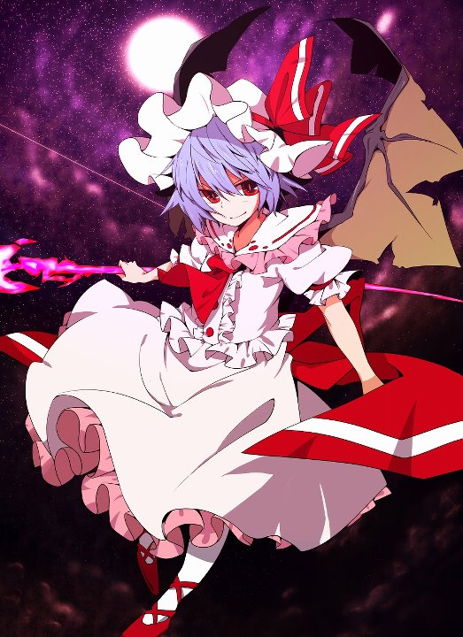

Touhou profile: Remilia Scarlet

*Touhou profile: Remilia Scarlet
_Chủng tôc: Vampire
_Khả năng: điều khiển số phận
_Tuổi: khoảng 500 tuổi
_Nghề nghiệp: cô chủ của Scarlet Devil Mansion
_Nơi ở: Scarlet Devil Mansion
_Một số thông tin:
+Remilia là chủ nhân và là người đứng đầu Scarlet Devil Mansion, cô chủ của Sakuya và Meiling, và là chị (người giám hộ) của Flandre. Mặc dù vẻ ngoài (và cách ứng xử) của cô giống một đứa trẻ và ko có vẻ gì là nguy hiểm nhưng cô lại có sức mạnh ma thuật đáng sợ và danh tiếng được biết khắp Gensokyo với biệt danh ‘Scarlet Devil’
Giống như mọi loài vampire, cô trở nên nhạy cảm và yếu đi khi bị ánh sáng mặt trời chiếu vào, do đó cô thường ở trong biệt thự (nơi có rất ít cửa sổ để chống ánh sáng chiếu vào) vào ban ngày và xuất hiện vào ban đêm
+Mặc dù cô ấy đc biết là thường hút máu người nhưng đó cũng chỉ là những bữa ăn nhẹ nên các nạn nhân của cô hầu như ko bao giờ chết vì vết thương của họ
+Trong Embodiment of Scarlet Devil, Remilia quyết định tung sương mù ra khắp Gensokyo nhằm che ánh mặt trời để cô có thể tự do đi lại vào ban ngày; sau khi kế hoạch đó bị phát hiện và ngăn chặn, cô buôc phải dùng dù che để đi lại vào ban ngày (đc nhắc đến trong Immaterial and Missing Power)
+Dù tính các của cô khá ích kỷ và trẻ con nhưng bạn vẫn có thể kết bạn đc với cô ấy, tuy nhiên loài người và Youkai muốn tránh xa cô hơn.
+Tên, ngoại hình, nhà và quần áo đều cho thấy cô có nguồn gốc là người châu âu và di cư đến Nhật Bản nhiều năm trước. Cô tự xưng mình là hậu duệ của vampire khép tiếng nhất thế giới - Count Vlad Ţepeş Dracul, nhưng đây là 1 lời nói dối trắng trợn
+Cũng giống như 1 số vampire, cô có thể biết hình thành dơi. Tuy nhiên không giống với hầu hết các vampire, cánh của cô vẫn có khi cô ở dạng người, điều đó làm cô không hoàn toàn biến thành hình dạng giống con người hoàn chỉnh
+Remilia ko những chỉ là chủ của Sakuya mà còn là người đặt tên cho Sakuya. Sakuya ko phải là loại người dễ dàng trở thành người hầu cho vampire, dẫn đến giả thuyết rằng Sakuya từng là thợ săn Vampire, và Remilia đã thu phụ đc cô nhờ sức mạnh vượt trôi trong chiến đấu
+Dựa theo thời gian của Gensokyo, Remilia sinh năm 1503, cũng giống như em gái cô – là 1 trong 1 số it các nhân vật đc biết đến ngày sinh
+1 trong những vũ khí của remilia là Gungnir, cây giáo có khả năng luôn phóng trúng các mục tiêu mà nó xác định. Cũng giống như vũ khí của Flandre, Gungnir chứa 1 sức mạnh ma thuật rất lớn nhưng yếu hơn cấp độ của Lævateinn
+Sự xuất hiện của Remilia khá trùng hợp ở Touhou 6. Cô là boss của stage 6 và có 6 spellcard trong mọi cấp độ chơi (Remilia có 5 spellcard và Sakuya có 1 trong stage đó). Khi các con số đc đặt chung với nhau sẽ là “666”, con số của quỷ
+Là chị lớn nên cô thường đc gọi là “ojou-sama” bởi fan. Bất cứ khi nào Flandre nói về chị mình, cô đều gọi là “onee-sama”. 1 nick name khác phổ biến của cô nữa là “Remirya”
+Trong các tác phẩm của fan, bất cứ khi nào cô xấu hổ hay bị chọc ghẹo thì điều đó thường đc gọi là “Charisma Break” (phá vỡ sự cuốn hút) bởi fan dựa trên sự tương phản với cá tính cuốn hút của cô
+1 cách thông thường khác để ám chỉ Remilia là “Remilia! Uu-☆” với những ai nghĩ điều đó là dễ thương.
+Những ai nhắc đến vampire ở Gensokyo luôn nói về gia đình Scarlet
+Remilia thường đc biết là hay mời con người đến những buổi tiệc ở biệt thự
+Cô cũng có thể chơi tại làng của con người khi cô muốn và do tò mò
+Cô cho rằng mình vượt trội hơn tất cả những người khác và ko thân thiện với bất cứ ai
+Khả năng thay đổi số phận của cô có thể biến con người bình thường thành nửa người nửa youkai